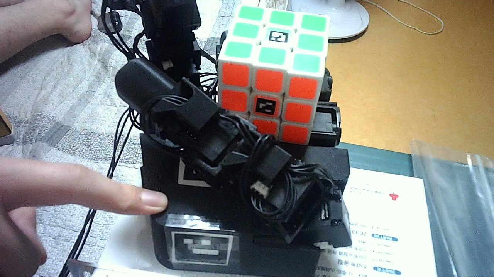

이전 위치에서 손끝 쪽으로 약 5mm
손을 따로 펴거나 옮길 필요는 없어. 프로그램이 빈손 준비를 마친 뒤 PLACE CUBE가 나올 때 큐브를 놓아.

원본 사진은 직전 배치야. 화살표와 점선은 이동 방향 안내이며, 정합된 목표 위치나 실측 길이는 아니야.
초록 위, 주황은 손목 ID41 방향을 유지해. 이전보다 손끝 쪽으로 약 5mm 옮겨서 검지와 중지의 평평한 모터 커버 위에 자연히 받쳐줘. 손바닥 홈에 밀어 넣지 마. 혼자 받쳐지지 않으면 Q로 멈춰.
첫 SPACE는 빈손 시작. PLACE에서 배치하고 사람 손을 뺀 뒤 둘째 SPACE. REMOVE에서 큐브를 먼저 빼고 셋째 SPACE로 모터를 꺼.
이번에는 배치만 비교해. 회전 목표 824개와 전류, 속도, 중단 기준은 직전 실행과 같아. 90도 성공 여부는 저장 영상과 실제 관찰로 확인해.